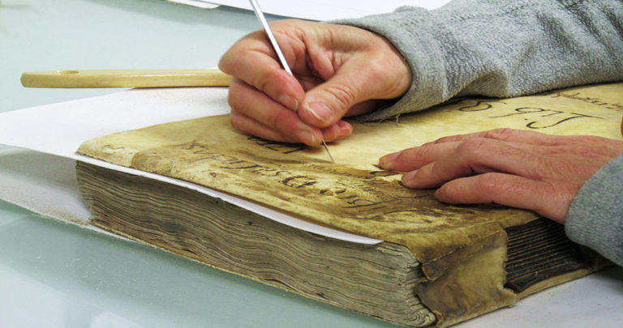

Gran experiencia en Restauración Documental. Pergamentum está formado por un equipo con una dilatada experiencia, altamente cualificado y en
constante formación, dedicado a la restauración de todo tipo de documentos (libros, documentos
de archivo, carteles, grabados, encuadernaciones…) en diferentes soportes (papel, pergaminos,
piel).
Nuestro propósito es contribuir a la conservación del patrimonio documental y
bibliográfico, evitar su desaparición y ayudar a fomentar una línea de actuación sobre el
patrimonio cultural generador de riqueza.
El servicio que ofrecemos consiste en una intervención integral para devolver a cualquier tipo de documento su funcionalidad y valor estético. Para ello se actúa en diferentes aspectos:
El tipo de servicios que abarcamos, engloba además, distintas actuaciones complementarias a la
restauración, para lo que ofrecemos un equipo dinámico y multidisciplinar.
Además,
nuestra
actividad complementa la labor realizada por Museos, Anticuarios, Archivos y bibliotecas para
gestionar fondos y actuaciones conjuntas.
Puede contactar con nosotras en los teléfonos 629 546 168 / 654 139 193 /686 782 370 o a través de nuestro correo electrónico restaura@pergamentum.net